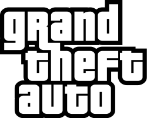

¿Cómo Grand Theft Auto marcó la industria de los videojuegos?
El cambio en la generación
Para nadie es un secreto que ‘Grand Theft Auto’ es una de las series más reconocidas de toda la industria,
esa franquicia de crimen moralmente ambiguo creada por Rockstar Games. Una que logró cambiar para siempre la
historia de este entretenimiento, trayendo consigo una evolución tanto tecnológica como social en los videojuegos.

Imagen Representativa
Todo el que conoce esta saga sabe que pocas son tan influyentes como lo fue Rockstar Games en su momento con ‘Grand Theft Auto’,
cambiando para siempre la forma de crear videojuegos. Por lo que en PlayerOne repasamos el impacto que trajo esta franquicia, marcando
un estándar que hasta el día de hoy se mantiene presente en este entretenimiento.
Sin importar cómo lo veas, ‘GTA’ elevó enormemente lo estándares en cuanto al diseño de videojuegos,
rompiendo sus barreras y ofreciendo un mundo totalmente abierto a las posibilidades. Algo que se vio
incluso con su primera entrega, una aventura de vista aérea que marcó la generación del PlayStation,
brindando a sus fanáticos una total libertad sobre sus acciones.